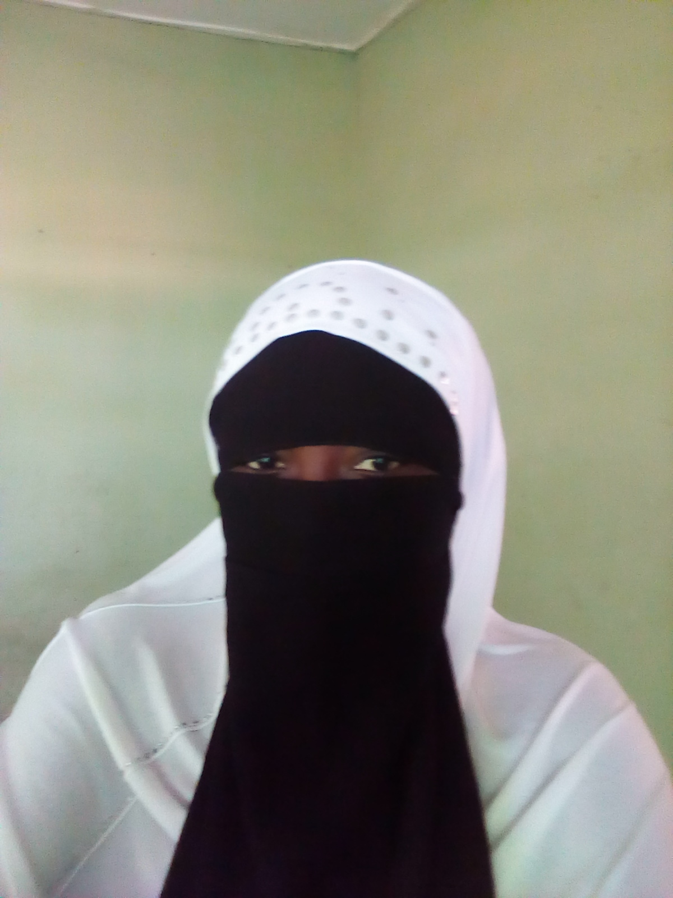

ABOUT RUKY
 Rukayatu is a 26 year old girl. She comes from the Northern Region of Ghana precisely Chamba. Currently she stays at Dodowa with her wonderful family. She is the last born of three siblings in her family. She lost her dad at the age of four and it was such a blow to herself and her family. She attended Nana Kwaku Boateng School where she sat for her Basic Entrace Certificate Examination(BECE). She passed with excellent grades and had admission to read General Science at Koforidua Secondary Technical School. The interesting thing is that she was among the pioneers of the four year program at the secondary school level. The concept of four years at the secondary school was very scary for her and she thought the four years was like a century but before she realised the four years was up and she was to write her final exams. During her Secondary School days, she was very vibrant and active. She took part in atheletics and because of her determined nature she execelled. Though she excelled in atheletics, she had to quit it because she was a day student and found it difficult to train. She sat for her West African Secondary School Certificate Examination in 2011. Due to her hardwork she come out with flying colours. She had admission to read Nursing at the Nniversty of Cape Coast in 2012. She's a graduate of the University of Cape Coast and holds a Bachelor of Science degree in Nursing. Shes's currently not practising nursing but rather pursing another degree in Islamic Studies with Islamic Online University.
Rukayatu is a 26 year old girl. She comes from the Northern Region of Ghana precisely Chamba. Currently she stays at Dodowa with her wonderful family. She is the last born of three siblings in her family. She lost her dad at the age of four and it was such a blow to herself and her family. She attended Nana Kwaku Boateng School where she sat for her Basic Entrace Certificate Examination(BECE). She passed with excellent grades and had admission to read General Science at Koforidua Secondary Technical School. The interesting thing is that she was among the pioneers of the four year program at the secondary school level. The concept of four years at the secondary school was very scary for her and she thought the four years was like a century but before she realised the four years was up and she was to write her final exams. During her Secondary School days, she was very vibrant and active. She took part in atheletics and because of her determined nature she execelled. Though she excelled in atheletics, she had to quit it because she was a day student and found it difficult to train. She sat for her West African Secondary School Certificate Examination in 2011. Due to her hardwork she come out with flying colours. She had admission to read Nursing at the Nniversty of Cape Coast in 2012. She's a graduate of the University of Cape Coast and holds a Bachelor of Science degree in Nursing. Shes's currently not practising nursing but rather pursing another degree in Islamic Studies with Islamic Online University.
Rukaya is a young lady who is disciplined,determined,hardworking and smart. she's a also a dedicated and a practsing muslim.She likes to try something new to add to her experience. she believes in her potentials and aspire to soar higher. She wants to be a self dependent woman, a loving wife/mother and above all a mother for all. During her leisure time, she likes to watch movies or chat with loved ones. She enjoys cooking and trying of new cooking recipes. Also she likes making new friends. She dislikes people who are disrespectful and lazy.The food i like best is banku with hot pepper and fish either fried or grilled.
FAMILY
 Ibrahim is my family's name. Tt is a very wonderful and lovely family. We hail from Chamba in the Northern Region of Ghana. Presently we stay at dodowa a suburd of Accra. We have an external family system but due to work and marriage I stay with only my nuclear family. I have three other siblings; two gentlemen and a lady. All my siblings are married with beautiful kids. Death laid its icy hand on our daddy twenty one years ago, may his soul rest in peace. Though we lost our daddy at an early stage, that never prevented us from pursuing our dreams. My mom single handedly cared for us, may she live long to enjoy the fruits of her labour. The name of our mother is Hawa. She is a very loving, caring, religious and a great disciplinarain. Our mother is our source of inspiration. She motivates us whenever we are down. She is the type who will give out all her best for the betterment of her children. All this qualities of my mother has contributed to bring us to where we are now. I will say my family is a religious one and we do not joke with our spiritual life. Our mother ensures that we all observe our daily prayers on time and because of that, it has helped in shaping us to be time conscious.
Ibrahim is my family's name. Tt is a very wonderful and lovely family. We hail from Chamba in the Northern Region of Ghana. Presently we stay at dodowa a suburd of Accra. We have an external family system but due to work and marriage I stay with only my nuclear family. I have three other siblings; two gentlemen and a lady. All my siblings are married with beautiful kids. Death laid its icy hand on our daddy twenty one years ago, may his soul rest in peace. Though we lost our daddy at an early stage, that never prevented us from pursuing our dreams. My mom single handedly cared for us, may she live long to enjoy the fruits of her labour. The name of our mother is Hawa. She is a very loving, caring, religious and a great disciplinarain. Our mother is our source of inspiration. She motivates us whenever we are down. She is the type who will give out all her best for the betterment of her children. All this qualities of my mother has contributed to bring us to where we are now. I will say my family is a religious one and we do not joke with our spiritual life. Our mother ensures that we all observe our daily prayers on time and because of that, it has helped in shaping us to be time conscious.
My family is very supportive of one another. Abdul Rashid is the name of my elder brother, and after completing his tertiary education he has been the one supporting us till now. He's more than a father to us. He pays our fees,accomodation, feeding and all other expenses for us. One thing I like about him is that he is democratic. One will wonder the ralationship between us upon visiting us for the first time because he's like a friend and agemate to us. He plays with us like we are his colleagues. I sometimes refer to him as my boyfriend and I wish I get a husband like him to marry in the near future. He is married to a very beautiful and hardworking wife with three amazing kids. I call his wife a woman with a heart of gold. I love my family becuase of the unity in the family. Also they are lovley,caring, and above all very supportive. May Allah continue to bless my family.
HISTORY
The name country is Ghana.Its capital town is Accra. It is located in West Africa. Ghana shares boundary on the North with Burkina Faso, on the West with Cote D'Ivoire,on the East with Togo and to the South with the Gulf of Guinea. Ghana has a tropical climate . There are two rainy seasons, from March to July and September to October,and a dry season from August which is in between the two rainy seasons. The land is not mountianeous but it has some high lands and steep escarpement in the middle parts. Ghana was formerly referred to as Gold Coast. It was colonised by the British. Ghana gained independence on 6th March, 1957. Ghana is the first African country to attain independence. The late Osagyefo Doctor Kwame Nkrumah led Ghana to independence. He was from Nkroful in the Western Region of Ghana. Tt has a lot of resources and among which are mineral resources; example gold, diamond, bauxite among others, extensive forests. Ghana has sixteen Regions. The official language is English though it is surrounded with Francophone countries. Ghana supports freedom of worship but the three major religion practiced by its citizens are Islam, Christianity and Traditional Religion. There are many tourist attraction sites in Ghana. Boti Falls, Kakum National Park, Mole Park, Aburi Botanical Gardens are a few of the tourist attraction sites in Ghana. I like Ghana because of its peaceful nature. The people are known world wide for their hospitality.
ASPIRATION
 Actually I heard of UWAT from a friend about three yaers ago but I did not bother to find out more about it and what they do. Recently I started seeing another friend sharing UWAT's post on facebook. This then spark the interest in me to ask her all UWAT is about. She took her time to explain to me what its all about. This then prompted me to enrol becuase the world is changing to a technological one and there is the need for one to equip himself/herself to be able to fit into the new world. I joined just to try something new out of my medical field. Not just anything at all but something that will sharpen my brains and also help me earn a living without being dependent and a burden on my family beacuse currently I am depending on them for my survival. During the orientation before the start of this program I realised there is a lot that i can use this skills for.
Looking at the happening of recent times having a degree without any added skill makes it difficult to secure a decent job, so I decided to join this program. I already have a degree but i want something that i can do even if government does not employ me. And in this 21st century, one must look sharp and also act smart. This opportunity I will say is a blessing for we the ladies to empower ourselves. Here in Ghana, they have the believe or mentality that the woman's office is the kitchen and I would like to use this opportunity to prove them wrong. I believe if ladies when given equal chance as men can do even better than what men are doing. So first and foremost I want to take my time to master this skill and become a boss in this field. After mastering the skill I would like to execute projects for others in order to earn a living. Also I will try to impact the skill to others more especially ladies so as to empower them as UWAT is doing for me. Also as a family we plan of setting up a family business so i will use my skill to create a website for the business. I will aslo be incharge of its management and maintenace in terms of IT.
TUTOR
Brain is a young man full of exuberance. He was born on 27 of May. He is tall. He is also plumby I would not say fat. He is chocolate in complexion. He is a 'dada ba'(DBee). He attended Ghana International School. Where he did his O' level and A' level. He likes tweeting and joined twitter in August 2018. He has 208 followers on twitter and he is currently following 175 people. I think his favourite quote is'the toughest part of getting to the top of the ladder is getting through the crowd at the bottom'. He is a team leader. Brian is also a good communicator and a goal-oriented person. As a tutor of web development, he possesses all the qualities of a good teacher. Some of the qualities that make him a good teacher are his mastery of the web concept and understanding, good at explaining thing for students to understand, friendly just to mention a few. Also he is a good communicator which is a plus to his ability to teach. I like his style of teachimg because he makes sure every one is at the same pace before moving on to the next concept. Also he makes sure everyone participates in his class.